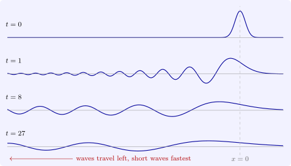

10.2 Solving equations on the line
Heat. Transforming \(u_t = \kappa u_{xx}\) in \(x\) gives \(\hat u_t = -\kappa \xi ^2\hat u\) for each \(\xi \), so \(\hat u(\xi , t) = \hat g(\xi )e^{-\kappa \xi ^2t}\). The factor \(e^{-\kappa \xi ^2t}\) is the transform of the heat kernel \(\Phi (\cdot , t)\), so by the convolution rule \(u = \Phi (\cdot , t) * g\), which is Theorem 6.1.1 found without guessing. High frequencies are damped fastest, which is the smoothing effect in Fourier language.
Waves. For \(u_{tt} = c^2u_{xx}\), \(\hat u_{tt} = -c^2\xi ^2\hat u\), so \(\hat u = \hat f\cos c\xi t + \hat g\,\frac {\sin c\xi t}{c\xi }\). Since \(\cos c\xi t = \frac 12(e^{ic\xi t} + e^{-ic\xi t})\), the shift rule turns the first term into \(\frac 12(f(x + ct) + f(x - ct))\), and \(\frac {\sin c\xi t}{c\xi }\) is the transform of \(\frac 1{2c}\) times the indicator of \([-ct, ct]\), which gives the integral term of d’Alembert’s formula. No frequency is damped: the transform simply multiplies by a phase.
Laplace’s equation in the half-plane. For \(u_{xx} + u_{yy} = 0\) in \(y > 0\) with \(u(x, 0) = g(x)\), \(\hat u_{yy} = \xi ^2\hat u\), and the bounded solution is \(\hat u = \hat g(\xi )e^{-|\xi |y}\). By the transform of \(e^{-a|x|}\) and the symmetry between \(f\) and \(\hat f\), \(e^{-|\xi |y}\) is the transform of \(\frac {y}{\pi (x^2 + y^2)}\), so \(u\) is the convolution of \(g\) with the half-plane Poisson kernel of Section 9.
Dispersion. The equation \(u_t + u_{xxx} = 0\), the linear part of the Korteweg–de Vries equation for shallow-water waves, transforms to \(\hat u_t = i\xi ^3\hat u\), so \(\hat u = \hat g(\xi )e^{i\xi ^3t}\): again only a phase. But now a plane wave \(e^{i(kx - \omega t)}\) is a solution only if \(\omega = -k^3\), the dispersion relation. Its phase velocity \(\omega /k = -k^2\) and its group velocity \(d\omega /dk = -3k^2\), the speed of a packet of waves near wavenumber \(k\), depend on \(k\): different frequencies travel at different speeds, and an initial hump breaks up into a wave train (Figure 13). The solution is the convolution of \(g\) with \((3t)^{-1/3}\operatorname {Ai}\bigl (x/(3t)^{1/3}\bigr )\), where \(\operatorname {Ai}\) is the Airy function, and its amplitude decays like \(t^{-1/3}\) although no energy is lost: \(\int u^2\,dx\) is constant by Plancherel, since \(|\hat u| = |\hat g|\).

The same method solves any linear equation with constant coefficients on \(\mathbb R^n\): the equation \(P(\partial _t, \nabla )u = 0\) becomes the ordinary differential equation \(P(\partial _t, i\xi )\hat u = 0\). Whether the problem is well posed depends on the roots \(\tau (\xi )\) of \(P(\tau , i\xi ) = 0\): if \(\operatorname {Re}\tau (\xi )\) is bounded above, perturbations are amplified by at most a fixed factor; if it is unbounded above, as for the backward heat equation, where \(\tau = \kappa \xi ^2\), high frequencies grow without bound, which is Hadamard’s instability of Section 3 seen in frequency.
Questions on this section
Stuck on something here? Ask below and it stays attached to this topic.